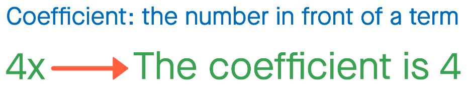
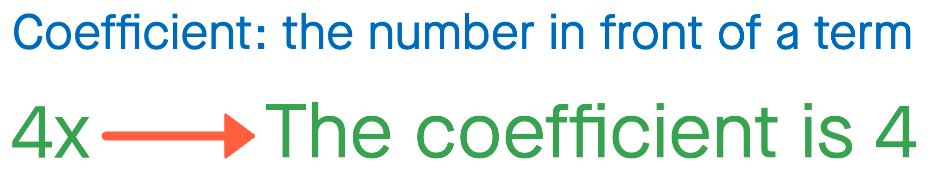

Given a monomial expression, the student can apply the Power Rule to determine the derivative of the monomial correctly - with accurate coefficients and powers - in at least 2 out of 3 derivative problems.
Recall the formal definition of the derivative that you have already learned. It is shown below. Under that is the definition of the power rule. The power rule is a fast way of calculating the derivative. Look at the flowchart and the defintiion of the power rule before moving on to learning the next module.

 
